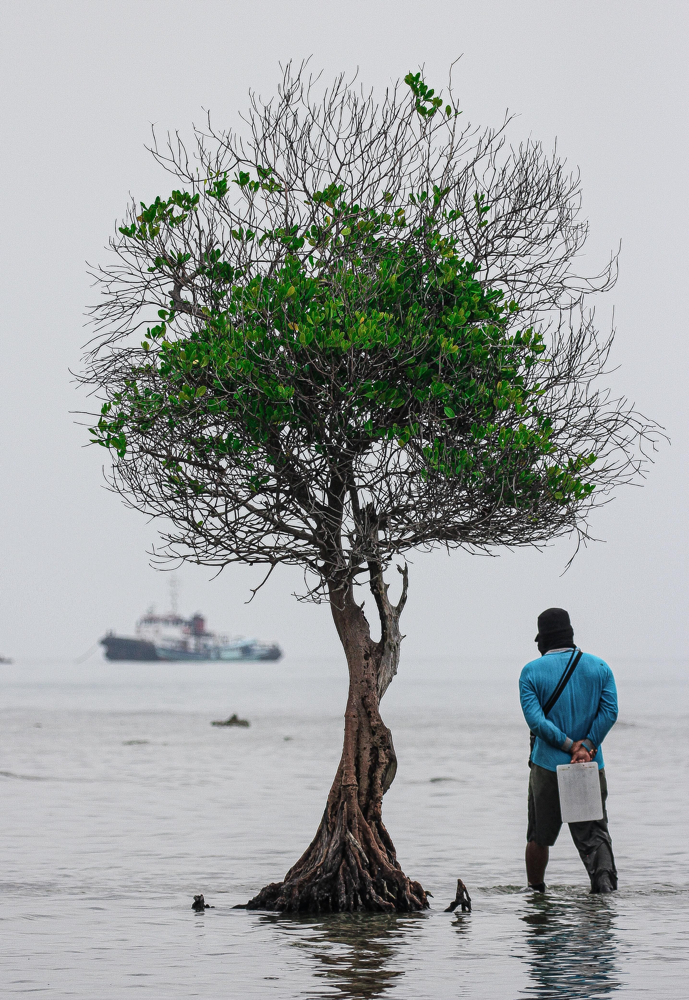

Keanekaragaman Ekosistem
Mari mengenal lebih dekat keseimbangan alam di Kepulauan Seribu

Ekosistem Bawah Laut
Terumbu Karang
Terumbu karang merupakan ekosistem penting di Kepulauan Seribu yang berfungsi sebagai habitat, tempat berlindung, serta area pemijahan dan pembesaran bagi berbagai biota laut. Karang juga membantu melindungi pesisir dari abrasi dengan memecah gelombang serta berperan dalam menjaga keseimbangan kimiawi laut.
Beberapa spesies khas yang umum ditemukan antara lain karang keras seperti Acropora, Montipora, dan Porites; ikan-ikan karang seperti ikan badut, ikan kepe-kepe, kerapu, dan napoleon yang dilindungi; serta invertebrata seperti kima raksasa dan bintang laut biru.

Penyelamat Ekosistem
Padang Lamun
Padang lamun adalah ekosistem penting di kawasan pesisir Kepulauan Seribu yang berperan sebagai tempat mencari makan, berlindung, dan tumbuh bagi berbagai jenis ikan, termasuk ikan-ikan muda yang memanfaatkan rumpun lamun sebagai area pembesaran.
Bagi penyu, terutama penyu hijau, padang lamun merupakan sumber pakan utama sehingga keberadaannya sangat menentukan kelangsungan hidup spesies tersebut. Untuk melindunginya, diperlukan upaya menjaga kualitas air dan mencegah pembuangan jangkar semberangan.

Benteng Alami Pesisir
Hutan Mangrove
Hutan mangrove berfungsi sebagai benteng alami yang mampu menahan abrasi dan meredam gelombang, sehingga melindungi garis pantai serta pulau-pulau kecil di Kepulauan Seribu dari erosi dan badai.
Selain itu, akar-akar mangrove yang rapat menjadi tempat asuhan penting bagi berbagai biota laut seperti ikan, udang, dan kepiting muda yang memanfaatkan kawasan ini sebagai area berlindung dan mencari makan sebelum berpindah ke habitat laut yang lebih luas.

Zona Transisi Dinamis
Ekosistem Pesisir & Pantai
Ekosistem pesisir dan pantai merupakan zona peralihan yang sangat dinamis, dipengaruhi oleh arus laut, gelombang, dan pasang surut yang terus berubah sehingga menentukan pola sedimentasi, erosi, serta pembentukan garis pantai.
Vegetasi pesisir seperti kelapa, ketapang, pandan laut, waru, dan cemara laut berperan penting dalam menstabilkan pasir, menahan angin kencang, serta menciptakan habitat bagi berbagai fauna pesisir perlindungan pulau-pulau kecil.

Kerang Raksasa Berharga
Kima (Tridacna spp.)
Kima adalah moluska terbesar di dunia yang hidup dalam simbiosis dengan alga. Mereka menjadi indikator kesehatan laut karena sensitif terhadap perubahan lingkungan. Kehadiran kima menunjukkan bahwa ekosistem laut masih dalam kondisi baik.
Spesies utama yang dilindungi termasuk Kima Raksasa (T. gigas) dan Kima Kerucut (T. crocea). Sayangnya mereka terancam karena perdagangan ilegal dan kerusakan habitat.


.jpeg)